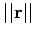
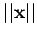
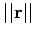
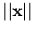

Inhalt Index DeskTop Bronstein

 Lineare Algebra Lineare Gleichungssysteme Überbestimmte lineare Gleichungssysteme Hinweise zur numerischen Lösung linearer Quadratmittelprobleme
Lineare Algebra Lineare Gleichungssysteme Überbestimmte lineare Gleichungssysteme Hinweise zur numerischen Lösung linearer Quadratmittelprobleme


Wegen der Symmetrie und positiven Definitheit von  im Falle des Vollranges von
im Falle des Vollranges von  bietet sich zur Lösung des Normalgleichungssystems das CHOLESKY-Verfahren an. Leider handelt es sich dabei um einen numerisch instabilen Algorithmus, der sich jedoch bei Problemen mit ,,großem`` Residuum  und ,,kleiner`` Lösung  numerisch gutartig verhält.
bietet sich zur Lösung des Normalgleichungssystems das CHOLESKY-Verfahren an. Leider handelt es sich dabei um einen numerisch instabilen Algorithmus, der sich jedoch bei Problemen mit ,,großem`` Residuum  und ,,kleiner`` Lösung  numerisch gutartig verhält.